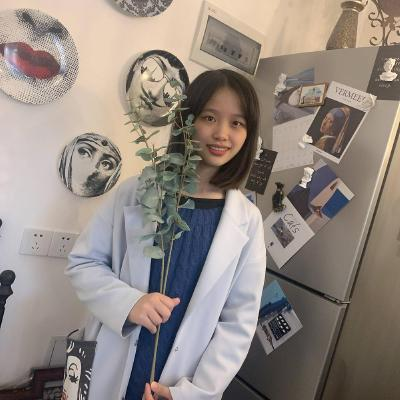

Wenting Chen 陈文婷Ph.D. Candidate
Department of Electrical Engineering, [Pinned Message] I will graduate in 2025 and am looking for postdoc position. |
 |
About Me
I am a final year Ph.D candidate in the Department of Electrical Engineering, City University of Hong Kong, supervised by Prof. Yixuan YUAN, Prof. W.S Tommy Chow, and Prof. L.H. Leanne Chan. Before that, I received the B. Eng and M. Eng degree from College of Computer Science and Software Engineering in Shenzhen University of China in 2017 and 2020, supervised by Prof. Linlin Shen. From Dec. 2019 to Nov. 2020, I had interned in Tencent Jarvis Lab, supervised by Dr. Shuang Yu and Prof. Yefeng Zheng.
My research interests lie in vision-language model, multi-modal large language model, generative AI, computer vision and their applications on medical AI, with a focus on report generation, medical image synthesis, endoscopy super-resolution, retinal image segmentation, multi-modality diagnosis, etc.
Welcome to contact me about research collaboration, please don't hesitate to drop me emails if you are interested.
News
[08/2024] I will visit Massachusetts General Hospital and Harvard Medical School.
[08/2024] Attend ACL 2024 in Bangkok.
[08/2024] One paper accepted by Medical Image Analysis 2024. (IF. 10.7).
[06/2024] Two papers accepted by MICCAI 2024.
[06/2024] One papers accepted by IEEE TMI 2024. (IF. 8.9).
[05/2024] One paper accepted by ACL 2024.
[01/2024] One paper accepted by Expert Systems with Applications 2024. (IF. 7.5).
[07/2022] One paper accepted by IEEE JBHI 2022. (IF. 7.7).
[07/2022] Pass the Ph.D. Qualify Examination.
[04/2022] One paper accepted by Medical Image Analysis 2022. (IF. 10.7).
[05/2021] One paper accepted by AAAI 2021.
[04/2021] One paper accepted by IEEE TMM 2021. (IF. 8.4).
[03/2021] One paper accepted by Pattern Recognition 2021. (IF. 7.5).
[11/2020] Finish the internship in Tencent Jarvis Lab.
[06/2020] I graduate from the School of CSSE in SZU and receive M.E. degree.
[06/2020] Two papers accepted by MICCAI 2020.
Selected Publications
-
Fine-Grained Image-Text Alignment in Medical Imaging Enables Explainable Cyclic Image-Report Generation
Wenting Chen, Linlin Shen, Jingyang Lin, Jiebo Luo, Xiang Li, Yixuan Yuan.
ACL, 2024.
[Paper]
-
STAR-RL: Spatial-temporal Hierarchical Reinforcement Learning for Interpretable Pathology Image Super-Resolution
Wenting Chen, Jie Liu, Tommy W.S. Chow, Yixuan Yuan.
IEEE Transactions on Medical Imaging (IEEE TMI), 2024. (Impact Factor: 8.9)
[Paper]
-
Medical Image Synthesis via Fine-Grained Image-Text Alignment and Anatomy-Pathology Prompting
Wenting Chen, Pengyu Wang, Hui Ren, Lichao Sun, Quanzheng Li, Yixuan Yuan, Xiang Li.
MICCAI, 2024.
[Paper] -
Mask-aware transformer with structure invariant loss for CT translation
Wenting Chen, Wei Zhao, Zhen Chen, Tianming Liu, Li Liu, Jun Liu, Yixuan Yuan.
Medical Image Analysis, 2024. (Impact Factor: 10.7)
[Paper]
Experience
- Massachusetts General Hospital and Harvard Medical School, Boston, Aug. 2024 - Feb. 2025.
Visiting Student
Advisor: Prof. Xiang Li
- Tencent, JARVIS Lab, Shenzhen, Dec. 2019 - Nov. 2020
Research Intern
Advisor: Dr. Shuang Yu and Prof. Yefeng Zheng
- City University of Hong Kong, Hong Kong, Nov. 2020 - May 2021
Research Assistant
Advisor: Prof. Yixuan YUAN
Teaching
EE4146: Data Engineering and Learning Systems, Semester B 2023/24, CityU.
EE1001: Foundations of Digital Techniques, Semester A 2023/24, CityU.
EE3206: Java Programming and Applications, Semester B 2022/23, CityU.
EE3206: Java Programming and Applications, Semester A 2022/23, CityU.
EE2331: Data Structures and Algorithms, Semester B 2021/22, CityU.
Services
Conference Reviewer: MICCAI'24,23,22.
Journal Reviewer: IJCV, TMI, TNNLS, MIA, TAI, IEEE JBHI